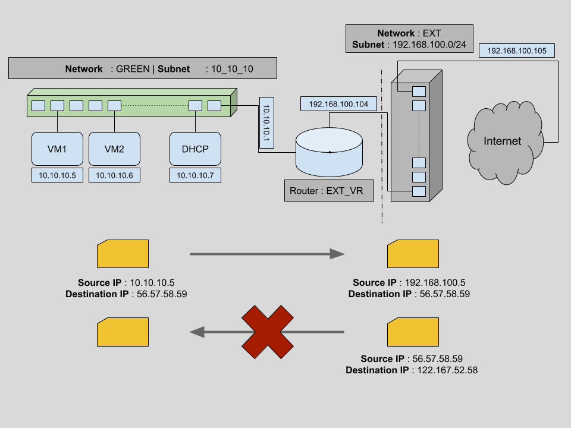

OpenStack Neutron WorkShop
Kavit Munshi & Alok Kumar
Aptira
Presenter Notes
Agenda
- Introduction to OpenStack
- Architecture Overview
- Dashboard Overview
- Add image using Dashboard
- Boot VM using Dashboard
Presenter Notes
Introduction to OpenStack
Presenter Notes
OpenStack is a cloud operating system that controls pools of compute, storage, and networking resources on public, private or hybrid clouds.
The OpenStack mission: to produce the ubiquitous Open Source Cloud Computing platform that will meet the needs of public and private clouds regardless of size, by being simple to implement and massively scalable.
Presenter Notes
Different OpenStack Projects
- Keystone (Identity)
- Nova (Compute)
- Glance (Image)
- Cinder (Block Storage)
- Neutron (Networking)
- Swift (Object Storage)
- Heat (Orchestration)
- Ceilometer (Telemetry)
- Horizon (Dashboard)
Presenter Notes
OpenStack Dashboard (Horizon)
Presenter Notes
Horizon Overview
- Provides user interface to OpenStack use cases
- Written in django + AngularJS
- Stateless web application which relies on other openstack service APIs.
Presenter Notes
Try It Yourself
- Get familiar with horizon dashboard
- Make sure your devstack setup is working.
Presenter Notes
OpenStack Authentication & Permission
Presenter Notes
Keystone Overview
- Implements OpenStack identity API
- Provides identity, token, catalog & policy services.
Presenter Notes
Try It Yourself
- Understand openstack authentication process using --debug
- Generate a token and use this to make a curl call
Presenter Notes
OpenStack Image Registry
Presenter Notes
Glance Overview
- Provides images and metadata definitions
- Images made available through Glance can be stored in variety of locations.
- From simple filesystems to object storage like OpenStack's own swift project.
Presenter Notes
Try It Yourself
- Upload same cirros image on different name.
- Upload under multiple tenants and vrify visibility.
Presenter Notes
Neutron Networking in OpenStack
Presenter Notes
OpenStack Neutron
Neutron is an OpenStack project to provide “network connectivity as a service” between interface devices (e.g., vNICs) managed by other OpenStack services (e.g., nova)
Presenter Notes
OpenStack Neutron
In very simple terms neutron
- allows users to create and manage network objects, such as networks, subnets and ports, which other OpenStack services can use through an API.
- It enables a large number of operators to implement complex set of networking technologies to power their network infrastructure, through the use of agents, plugins and drivers.
Presenter Notes
Workshop Overview
As part of this workshop:
- We will create two sets of networks and subnets.
- Then we will spawn multiple VMs across these networks and verify network connectivity for static IPs.
- Next we will look into restricting access to VMs using security groups.
- Finally an insight to connectivity across different networks using routers and floating IPs.
Presenter Notes
1. Create Networks, Subnets & Verify Ports
Presenter Notes
Create networks & subnets

Presenter Notes
Create networks & subnets
1 neutron net-list
2 neutron net-create GREEN
3 neutron subnet-create --name 10_10_10 GREEN 10.10.10.0/24
4 neutron net-list
Presenter Notes
Create networks & subnets
Verify ports from dashboard
Presenter Notes
Try It Yourself
- Create another network (RED)
- Create another subnet (20_20_20) for this network
- Verify created network, subnet & port from CLI as well as dashboard
Presenter Notes
2. Spawn Virtual Machines
Presenter Notes
Boot Green Virtual Machine
Presenter Notes
Boot Green Virtual Machine
1 openstack network list
2 # Boot using private network
3 nova boot --flavor m1.tiny --image cirros --nic net-id=<NET_ID> greenbox01
4 nova list
5 neutron port-list
Presenter Notes
Try It Yourself
- Boot another tiny VM in on GREEN network from dashboard.
- Verify that ports created are in GREEN network
- Boot two more tiny VMs from CLI in RED network.
Presenter Notes
3. Security Groups
Presenter Notes
- Security groups are a virtual firewall for your compute instances to control inbound and outbound traffic.
- Security Groups in OpenStack are implemented per VM.
- You can create a bunch of security group rules and assign them to instances
- implemented through plain Linux Bridges
Presenter Notes
Allow SSH access to VMs
1 nova secgroup-list
2 nova secgroup-list-rules default
3 nova show greenbox01 | grep security_groups
4 nova secgroup-add-rule default tcp 22 22 0.0.0.0/0
5 nova secgroup-list-rules default | grep 22
Presenter Notes
Try It Yourself
- Create another security group osid
- Allow all ICMP pings
- Veriy this by attaching this to any of VMs
Presenter Notes
4. Routers
Presenter Notes
Routers Connect Networks


Presenter Notes
Routers operate in Layer 3 of OSI layer
Routers are logical networking components which
- Forward data packets between networks,
- Provide L3 and NAT forwarding to provide external access for VMs on tenant networks.
Presenter Notes
Let's Attach RED and GREEN networks through router
1 neutron router-create EXT_VR
2 neutron router-interface-add <INTERFACE_ID> 10_10_10
3 neutron router-interface-add <INTERFACE_ID> 20_10_10
- Verify Pings across two machines on different networks
Presenter Notes
Try It Yourself
- Create another new router
Presenter Notes
Current Status - No outside connectivity
- Though there is connectivity between virtual machines across different networks, there is still no outside connectivity.
- Packets flowing from virtual machines still cannot reach to any outside network.
Presenter Notes
Let's make router our Gateway
To have external connectivity, we need to set this router as a gateway, which means connecting one interface of the router to the external network. In our case we have an existing external network, and we will add this network as a gateway for this router.
1 neutron router-gateway-set EXT_VR ext
2 neutron port-list
Presenter Notes
5. Floating IPs
Presenter Notes
No connectivity from outside to inside
Problem

Presenter Notes
No connectivity from outside to inside
Solution
One way to allow connectivity for a VM from outside networks is creating public IPs for each of the VMs. But this is not maintainable in the long term. Using public IPs per VM will lead us to a situation where we have to maintain a large pool of IPs per VM.
In general we want our VMs to be disconnected from the public network except occasionally.
Presenter Notes
Introducing Floating IP
Floating IPs are routable public IPs which can be assigned to a VM and revoked again. This is maintained on the router level.
1 neutron floatingip-list
2 neutron floatingip-create ext
3 neutron floatingip-associate 02ff1d61-6280-4f25-a8ff-9e5676ece01d 378956ec-3928-4e06-873c-423b7f017695
4 neutron floatingip-list
Presenter Notes
Try It Yourself
- Attach floating IP to both VMs in RED network and verify ssh access
Presenter Notes
Summary
This brings the end of Workshop on Neutron networking in OpenStack.
Now we have an unserstanding on
- How to create networks and subnets in an OpenStack cloud.
- Blocking/Allowing traffic per virtual machine through the use of security groups.
- How to connect different networks using L3 switching and routers.
- How to use floating IPs to allow external connectivity to virtual machines.